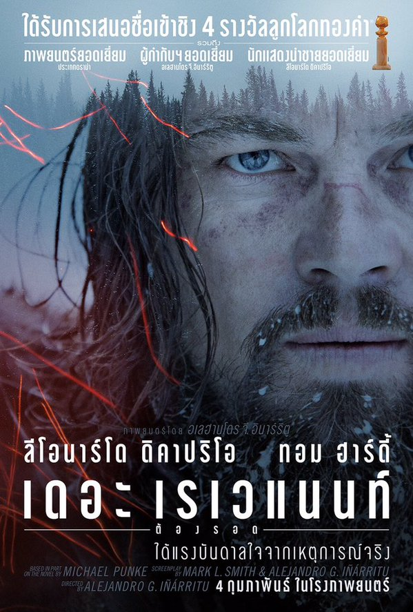

THE REVENANT (2016) 8.1/10
เรื่องย่อ :ภาพยนตร์ที่สร้างขึ้นจากแรงบันดาลใจจากเหตุการณ์จริงเรื่อง The Revenant – เดอะ เรเวแนนท์ ต้องรอด กำกับฯ และร่วมเขียนบทโดยผู้สร้างชื่อดังเจ้าของรางวัล Academy Award อเลฮังโดร กอนซาเลซ อินาร์ริตู (Birdman, Babel) กับเรื่องราวที่เกิดขึ้นจากการสำรวจป่าอเมริกาที่ไม่ถูกบันทึกลงแผนที่ นักสำรวจแห่งตำนาน ฮิวจ์ กลาส (ลีโอนาร์โด ดิคาปริโอ) ถูกทำร้ายอย่างโหดเหี้ยมและถูกเพื่อนร่วมทีม จอห์น ฟิตซ์เจอรัลด์ (ทอม ฮาร์ดี้) ปล่อยทิ้งไว้ให้ตายเพียงลำพัง เขามีเพียงกำลังใจเป็นอาวุธในการต่อสู้ The Revenant Master กลาสต้องทนต่อสภาพที่เหน็บหนาวอย่างรุนแรง เขาต้องหาทางรอดชีวิตและแก้แค้นฟิตซ์เจอรัลด์
Trailer